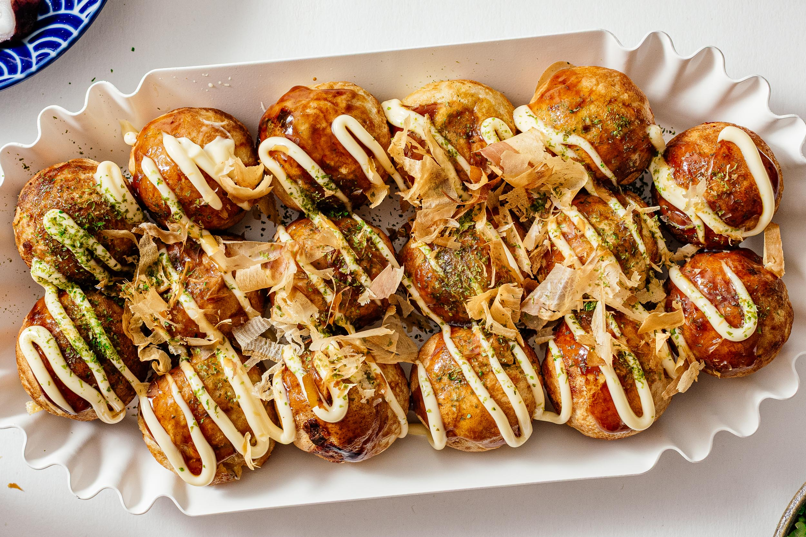

Takoyaki
Is a popular Japanese street food consisting of small, round balls made from a wheat flourbased batter filled with diced octopus, pickled ginger, and green onions.
25 min
Namiko Hirasawa Chen
Ingredients in this Takoyaki Recipe
- Boiled Octopus: Tender octopus, cut into bite-sized pieces, serving as the main protein in Takoyaki, adding chewy texture and flavor.
- Katsuobushi: Dried bonito flakes that add smoky, umami flavor.
- Red Pickled Ginger (Beni Shoga): Adds a tangy, slightly spicy flavor.
- Tenkasu: Tempura scraps that provide crunch and texture.
- Green Onion / Scallion: Finely sliced; adds a fresh, mild onion flavor.
- Neutral Oil: Used to grease the takoyaki pan.
- Batter Ingredients:
- All-Purpose Flour: Forms the base structure of the batter.
- Baking Powder: Makes the batter light and fluffy.
- Eggs: Helps bind the batter together.
- Dashi: Japanese soup stock that adds deep umami flavor.
- Soy Sauce: Provides savory seasoning.
- Kosher Salt: Enhances overall flavor.